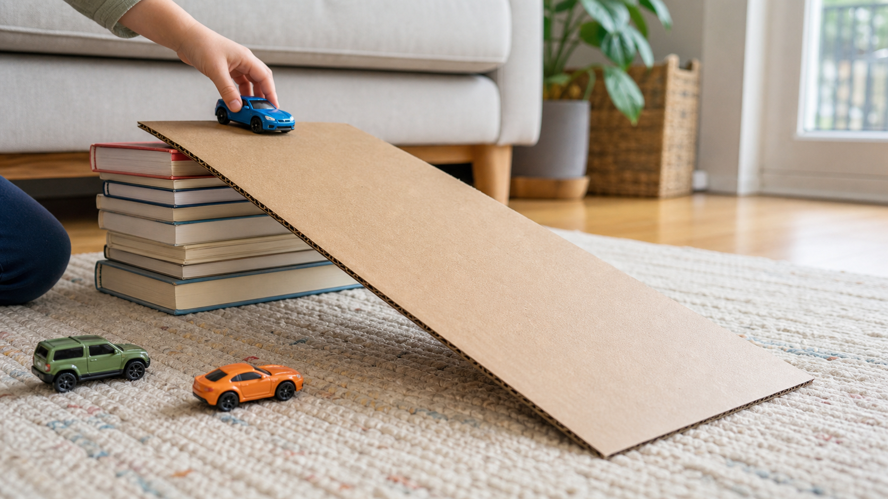

Cardboard Car Ramp
Four kid-facing steps: stack books, add cardboard, pick a car, let it roll.
One-screen activity cards
Tiny build-and-play prompts for preschoolers using cardboard, books, tape, blocks, toy cars, and household stuff.

Four kid-facing steps: stack books, add cardboard, pick a car, let it roll.
Short cards by material, time, mess level, and adult help.
Curated YouTube ideas translated into kid-facing steps and parent safety checks.
The longer parent-facing version stays available, but it is no longer the main product.